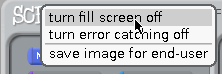
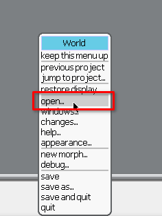
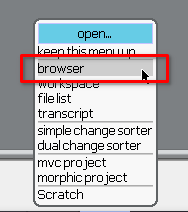
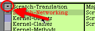
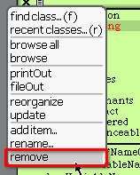
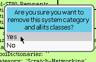
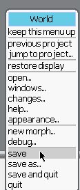
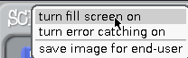

1. Hold [⇧ Shift] and click the rounded bit of the R in the Scratch logo (look at the top left corner).
2. Click "Turn fill screen off"
3. Click the white area that appears at the right and bottom of the window. This will bring up the world menu. Click on "open..."
4. Click on "browser"
5. To delete a module, first find the one you wanna delete, select it, and click on the "- (minus)" button
6. Click on "remove"
7. Click on "Yes". and it should be deleted.
Now that you know how to get in the system browser. Find these modules and delete em!
With these modules gone, there should be no way that any internet connection from the Scratch 1.x offline editor. Ever. Hope you dont plan on uploading projects to the website!
8. Click Save
9. Hold shift and click on the roundbit of the R, then click on "turn fillscreen on"
10. Finally try to upload something. It would crash the application, but thats normal.
CONGRATS! YOU SUCCESSFULL CUT THE INTERNET CONNECTION ON SCRATCH 1.X!!!!